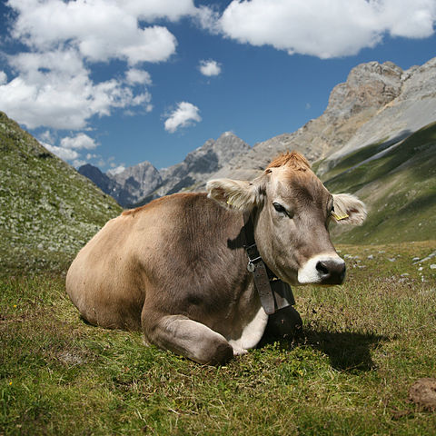

Cow
Cattle—colloquially cows—are the most common type of large domesticated ungulates. They are a prominent modern member of the subfamily Bovinae, are the most widespread species of the genus Bos, and are most commonly classified collectively as Bos taurus. Cattle are raised as livestock for meat (beef and veal), as dairy animals for milk and other dairy products, and as draft animals (oxen or bullocks that pull carts, plows and other implements). Other products include leather and dung for manure or fuel. In some regions, such as parts of India, cattle have significant religious meaning. From as few as 80 progenitors domesticated in southeast Turkey about 10,500 years ago, according to an estimate from 2011, there are 1.4 billion cattle in the world. In 2009, cattle became one of the first livestock animals to have a fully mapped genome. Some consider cattle the oldest form of wealth, and cattle raiding consequently one of the earliest forms of theft.